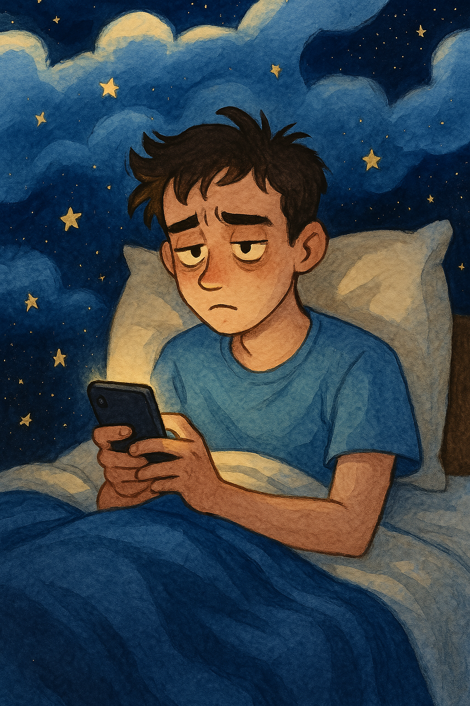
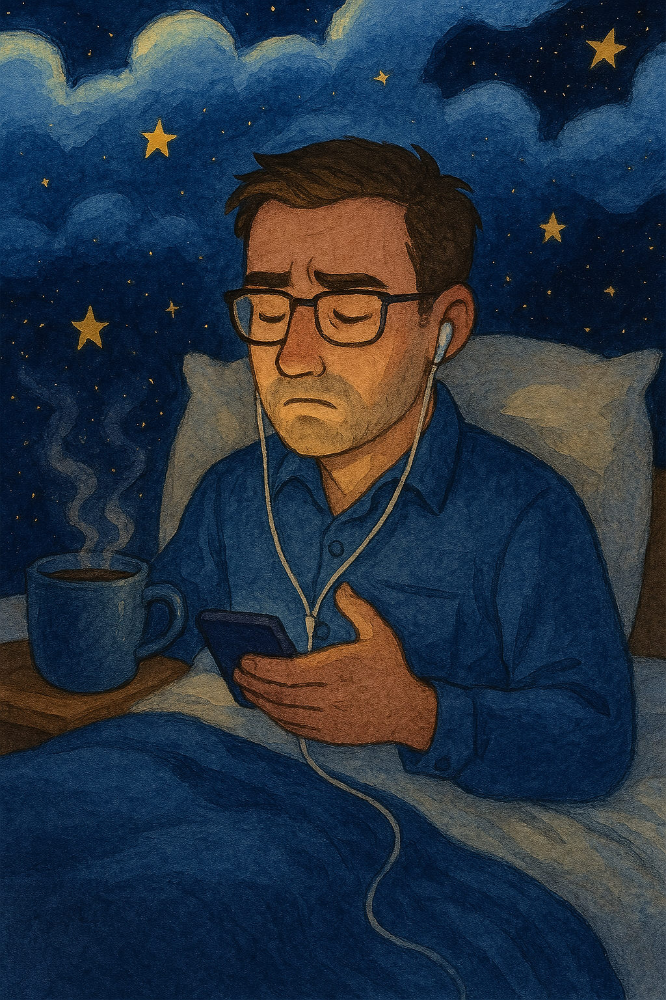

Sleep Assistant
Home
Features
Wireframes
Personas
Insights
User Personas
Understanding our users helps us design better experiences.

Alex – The Sleep-Deprived Student
Age:
21
Occupation:
College Student
Pain Points:
Late-night studying, inconsistent sleep
Goals:
Wake up refreshed, better routine
Behaviors:
Uses phone before bed, naps irregularly
Needs:
Smart alarms, study/sleep planner, bedtime reminders

Michael – The Busy Professional
Age:
35
Occupation:
Software Engineer
Pain Points:
Stress insomnia, screen time at night
Goals:
Reduce stress, sleep better
Behaviors:
Works late, drinks evening coffee
Needs:
Guided meditation, sleep insights, structure